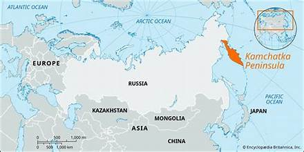
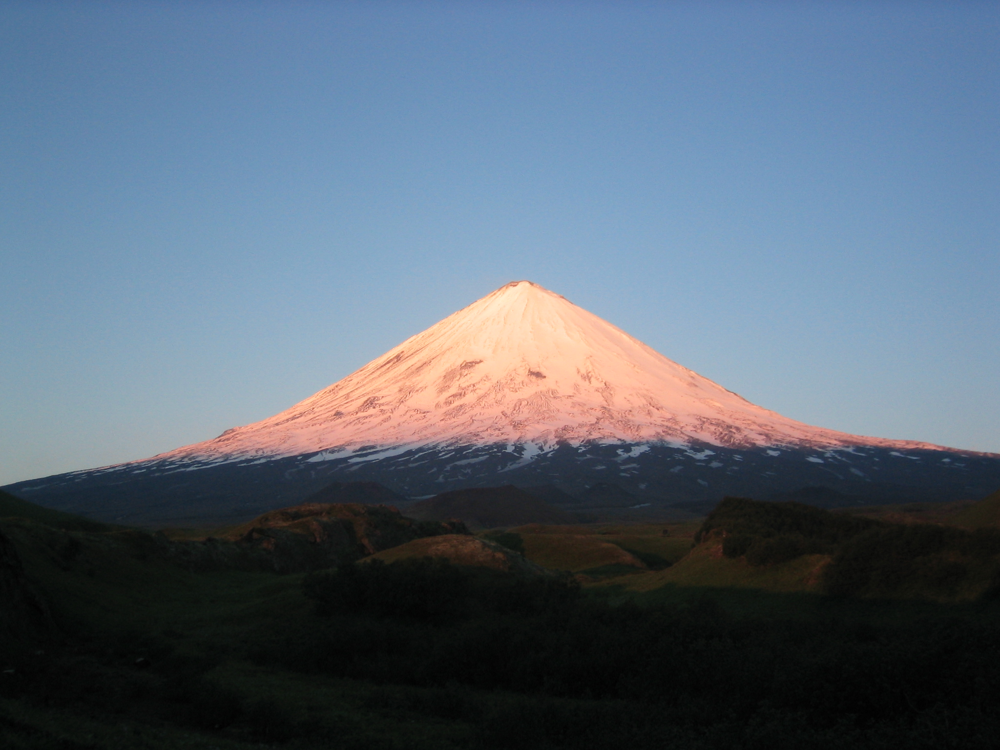
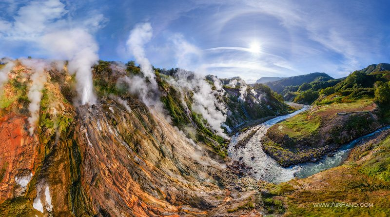
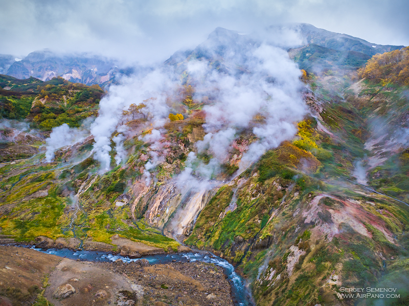
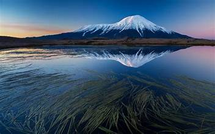

The Kamchatka Peninsula is a vast volcanic region in Russia’s Far East, extending about 1,200 km (750 mi) between the Pacific Ocean, the Bering Sea, and the Sea of Okhotsk. Renowned for its dramatic landscapes and active geology, it forms one of the most pristine wilderness areas on Earth and a UNESCO World Heritage Site for its “Volcanoes of Kamchatka.
Two mountain chains, the Sredinny and Vostochny ranges, dominate the peninsula’s spine. The Kamchatka River valley divides them, forming fertile lowlands amid tundra and forest. The region sits squarely on the Pacific “Ring of Fire,” producing frequent earthquakes, hot springs, and geysers — including the famed Valley of Geysers in Kronotsky Nature Reserve.
Kamchatka hosts more than 1,300 plant species and abundant wildlife. Its salmon-rich rivers support the world’s densest brown bear population, while coastal waters teem with whales, seals, and seabirds. Roughly 12 percent of its territory is under federal or regional protection, encompassing reserves such as Kronotsky, Bystrinsky, and South Kamchatka Sanctuary.
The climate is harsh and maritime—long, snowy winters and short, cool summers. Heavy precipitation sustains glaciers and snowfields that feed hundreds of rivers. Despite its remoteness, the region faces environmental challenges from climate change and limited but expanding resource extraction.
Fewer than 300,000 people inhabit Kamchatka Krai, mostly ethnic Russians and Indigenous Koryaks, Itelmens, and Evens. Economic activity centers on fishing—especially crab and salmon—plus small-scale reindeer herding, geothermal energy, and rapidly growing eco- and adventure tourism. Petropavlovsk-Kamchatsky, founded in 1740, remains its administrative and cultural hub.


